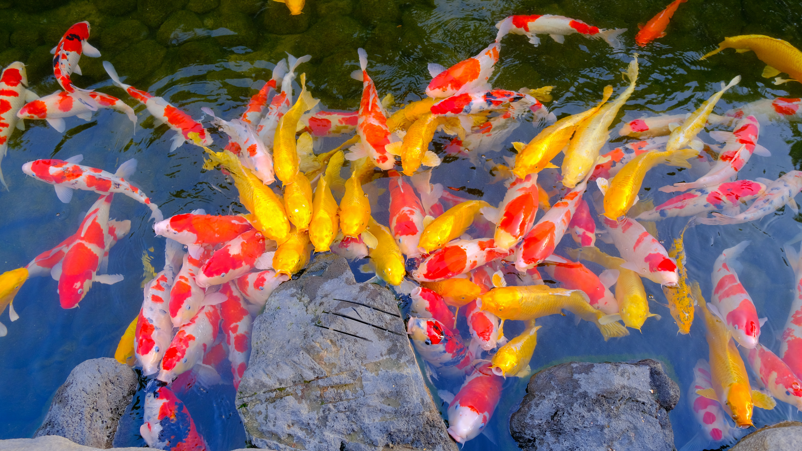
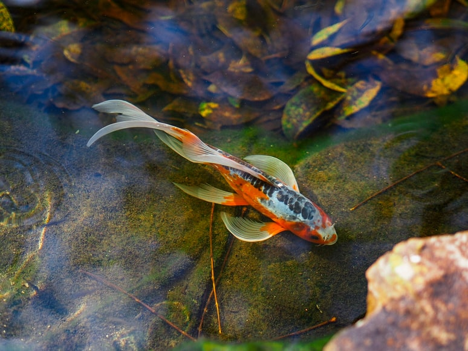

Instituto de Pesca apresenta ração sustentável para peixes carnívoros
Tecnologia do IP atende demanda global por alimentos mais sustentáveis para a agricultura, sem uso de farinha de peixe
O Instituto de Pesca (IP-APTA) apresentou ao setor produtivo uma nova ração sustentável para peixes, durante evento que marcou a celebração do aniversário de 130 anos da Secretaria de Agricultura e Abastecimento do Estado de São Paulo. A nova ração, desenvolvida em parceria com a BRF Ingredients - unidade de negócios interdependente da Companhia especializada na produção de ingredientes de alta performance para as indústrias de nutrição e saúde -, permite a substituição total da farinha de peixe (FP) para alimentação da truta arco-íris utilizando insumos sustentáveis e subprodutos da indústria animal.
A apresentação da tecnologia ocorreu durante celebração do aniversário da Secretaria em 30 de novembro, na Sede do Instituto Agronômico, em Campinas. O evento contou com a presença do vice-governador Rodrigo Garcia, do secretário de Agricultura e Abastecimento do Estado de São Paulo, Itamar Borges, de servidores da Pasta, de autoridades e de representantes do setor agro.
De acordo com a pesquisadora do Instituto de Pesca, Neuza Takahashi, a nova tecnologia do IP trará impacto para toda a indústria mundial de salmão, peixes nativos e peixes marinhos. \"A criação de peixes carnívoros depende de ração a base de farinha de peixe, na qual 5 kg de peixes marinhos capturados são usados para produzir 1 kg de peixe cultivado. Tal impacto sobre a natureza não é mais tolerado. Os consumidores exigem uma ração com insumos não extrativista, como essa que desenvolvemos\", afirma.
Neuza explica que os peixes carnívoros suprem o nicho mais valorizado do mercado consumidor. O cultivo em cativeiro exige, porém, uma alimentação que atenda a requisitos nutricionais mais específicos, em contraste a peixes que se alimentam de plantas ou detritos do fundo. \"O sucesso em atender a tais requisitos nutricionais é verificado por meio de teste com truta arco-íris, modelo experimental internacional de peixe carnívoro. Se aprovado para a truta, o produto é geralmente extensível para outras espécies carnívoras\", explica a pesquisadora.
Para o desenvolvimento do novo ingrediente, foram utilizados os subprodutos da indústria de processamento de aves, fontes proteicas renováveis de qualidade e rastreáveis. O produto encontra-se disponível no mercado nacional como Proteína Hidrolisada de Frango da BRF Ingredients e também está sendo comercializada no exterior.
\"A aquicultura do futuro tem que ser sustentável econômica e ambientalmente, portanto, além do uso de fontes proteicas alternativas de qualidade a busca por ração comercial ZERO-FP é a forma de preservar os recursos marinhos limitantes e garantir o crescimento da indústria aquícola\", afirma Neuza.
Durante o evento de aniversário da SAA, uma amostra do novo produto foi entregue por Neuza, pela vice-presidente de Relações Institucionais e Sustentabilidade da BRF, Grazielle Parenti, e pela gerente executiva de Relações Institucionais e Governamentais da empresa, Helena Romeiro de Araújo, a Manoel Joaquim Peres, da empresa de ração Qualy Nutrição Animal, e Paulo Gustavo Salgado Ribeiro, produtor da Truta dos Alpes, de Pindamonhangaba, interior paulista.
